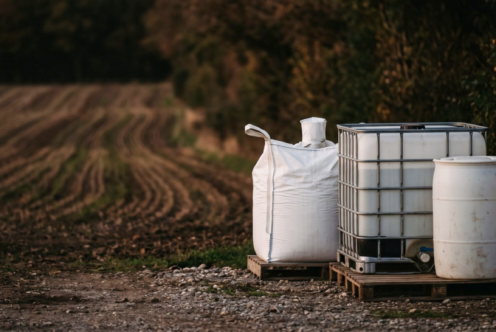

Próchnica+
Wspólnie z polskimi producentami odbudowujemy polskie gleby
Program badawczy na lata 2025–2028: pięć gospodarstw, pięć upraw – aronia, jabłoń, malina, grusza i truskawka. Wyniki publikujemy, także negatywne; pierwsze podsumowanie planujemy na grudzień 2026.